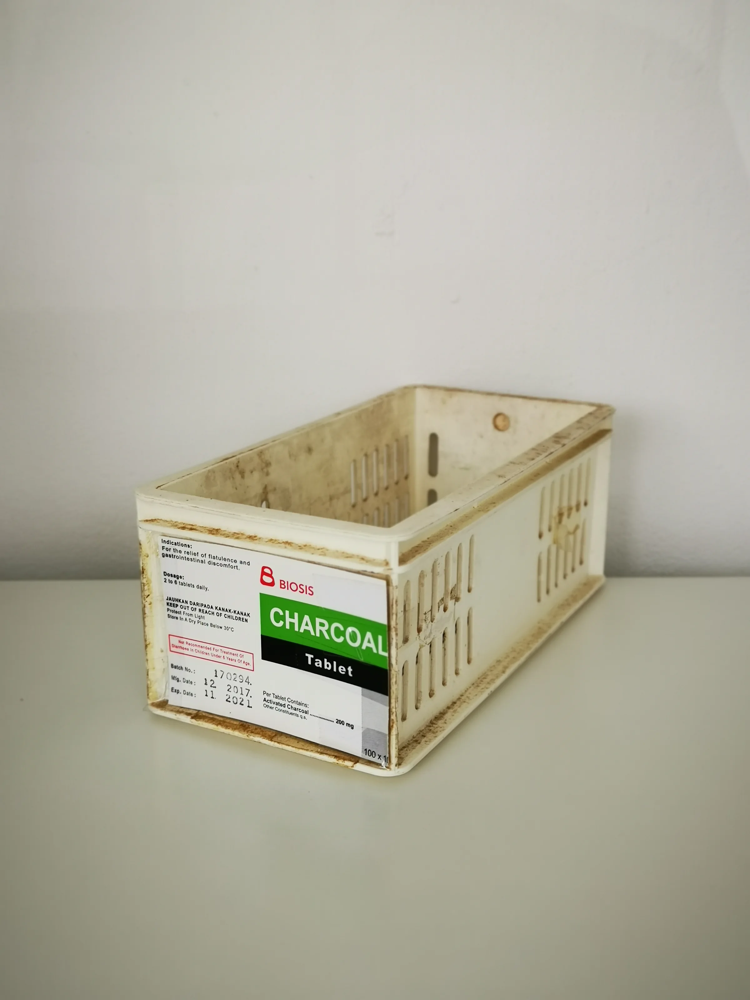

Explore the essentials of wholesale France body sourcing, from documentation to shipping logistics, tailored for professional buyers in clinics and spas.
When sourcing body fillers wholesale from France, professional buyers face unique challenges that require careful navigation. Understanding the intricacies of documentation, handling, and shipping is crucial to ensure a smooth procurement process. This guide aims to equip clinics, spas, resellers, and distributors with the knowledge needed to make informed purchasing decisions.
The importance of proper sourcing cannot be overstated. In a competitive market, having reliable access to quality products can set your business apart. This article will delve into the essential aspects of wholesale France body sourcing, providing practical insights to streamline your purchasing experience.
Key Takeaways
- Understand the necessary documentation for importing body fillers from France.
- Evaluate suppliers based on product quality, communication, and reliability.
- Plan your orders considering minimum order quantities (MOQ) and reorder cycles.
- Ensure clarity on shipping logistics, including packing and destination requirements.
- Utilize SOLA’s expertise for accurate wholesale quotations and availability checks.
What this guide covers
- Understanding body fillers
- Buyer scenarios and planning
- Comparison criteria for suppliers
- Checklist before requesting a quote
- Logistics: shipping, packing, and documentation
- MOQ and reorder planning
- Frequently asked questions
What buyers should understand first

Body fillers are injectable substances used in aesthetic procedures to enhance facial volume, smooth wrinkles, and improve overall appearance. They are commonly utilized in clinics and spas for cosmetic enhancements. When sourcing body fillers, it is essential to understand the different types available, including hyaluronic acid-based fillers, collagen-stimulating fillers, and others. Each type has its unique properties and applications, making it vital for buyers to select products that align with their service offerings.
Moreover, understanding the regulatory landscape in France regarding body fillers is essential. Different fillers may have varying approval statuses, and buyers must ensure they are sourcing products that comply with both French and international regulations. This knowledge not only protects your business but also ensures the safety and satisfaction of your clients.
Which buyers is this most relevant for?
This guide is particularly relevant for professional buyers in clinics, spas, and distribution companies looking to stock body fillers. Buyers must consider their specific needs, such as the types of treatments offered, client demographics, and inventory management. For instance, a high-end spa may prioritize premium brands with a strong reputation, while a clinic may focus on cost-effectiveness and reliability. Understanding these scenarios helps in making informed purchasing decisions.
Additionally, resellers and distributors should assess their market demand and client preferences. Knowing whether your clientele prefers innovative products or established brands can significantly influence your purchasing strategy. This guide will help you navigate these considerations effectively.
How to compare options before ordering
When evaluating wholesale suppliers for body fillers, consider the following criteria:
- Product Type: Identify the specific fillers that align with your treatment offerings.
- Brand Reputation: Research the brands to ensure quality and efficacy.
- Packaging: Assess the packaging for safety and compliance with regulations.
- Batch and Expiry Visibility: Ensure that suppliers provide clear visibility on batch numbers and expiry dates.
- Supplier Communication: Evaluate the responsiveness and clarity of communication from potential suppliers.
- Destination Requirements: Confirm that suppliers can meet your shipping and handling needs based on your location.
- Pricing Structure: Compare pricing models, including bulk discounts and payment terms.
Buyer checklist before requesting a quote

- Define the types of body fillers needed for your business.
- Determine your budget and expected order quantities.
- Identify preferred brands or product specifications.
- Check local regulations regarding the import of body fillers.
- Prepare questions regarding shipping, handling, and documentation.
- Gather information on your business's shipping address and any special requirements.
- Review your inventory management system to align orders with demand forecasts.
Shipping, packing and documentation questions
Logistics play a critical role in the wholesale sourcing process. Here are some common questions buyers should consider:
- What documentation is required for importing body fillers from France?
- How will the products be packed to ensure safety during transit?
- What are the expected shipping times and costs?
- Are there any customs regulations that need to be addressed?
- How can I track my shipment once it has been dispatched?
- What insurance options are available for high-value shipments?
MOQ, quotation and reorder planning
Understanding minimum order quantities (MOQ) is essential for effective procurement planning. Different suppliers may have varying MOQs, which can impact your inventory strategy. When preparing to request a quote, consider the following:
- Calculate the quantities needed based on your sales forecasts.
- Identify any product variants you may require.
- Provide detailed destination information to ensure accurate shipping quotes.
- Contact SOLA to confirm current availability and request a wholesale quotation.
- Plan for seasonal demand fluctuations to avoid stock shortages.
FAQ
What documentation do I need for importing body fillers?
You will typically need import permits, invoices, and certificates of analysis from the supplier.
How can I ensure product quality when sourcing?
Research supplier reputations, request samples, and check for certifications.
What are the common MOQs for body fillers?
MOQs can vary widely, so it’s essential to check with each supplier.
How do I handle customs clearance?
Ensure all documentation is complete and accurate, and consider working with a customs broker if necessary.
Can SOLA assist with sourcing and quotations?
Yes, SOLA can provide support in confirming availability and offering wholesale quotations.
Contact SOLA for wholesale quotation via WhatsApp.
Planning a wholesale request?
Send product names, quantities and destination for a tailored discussion.
Contact SOLA on WhatsApp →General educational content for professional buyers. Not medical, legal, regulatory or import advice.
Image sources: Interior of Snow Clinic Ansan branch in March 2026.jpg by ELIZABETH XIONG (CC BY 4.0, 4284x5712 px); Medicine storage container 03.jpg by Wikimedia Commons contributor (CC0, 2736x3648 px); BM26- 18th Medical Group demonstrates expeditionary medical capabilities (9559598).jpg by U.S. Air Force photo by Airman 1st Class Amy Kelley (Public domain, 5615x3736 px).